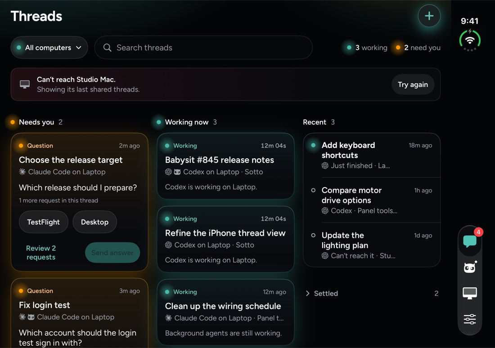
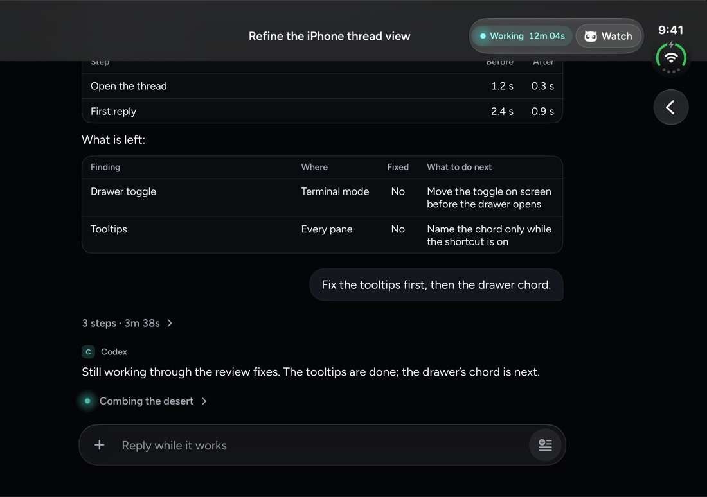
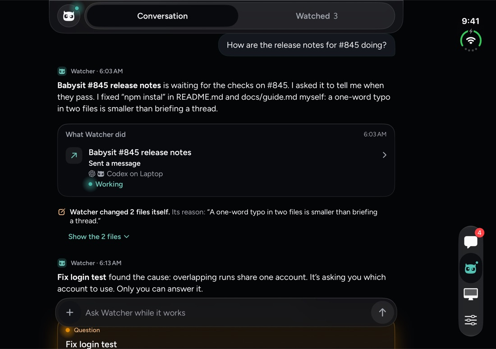
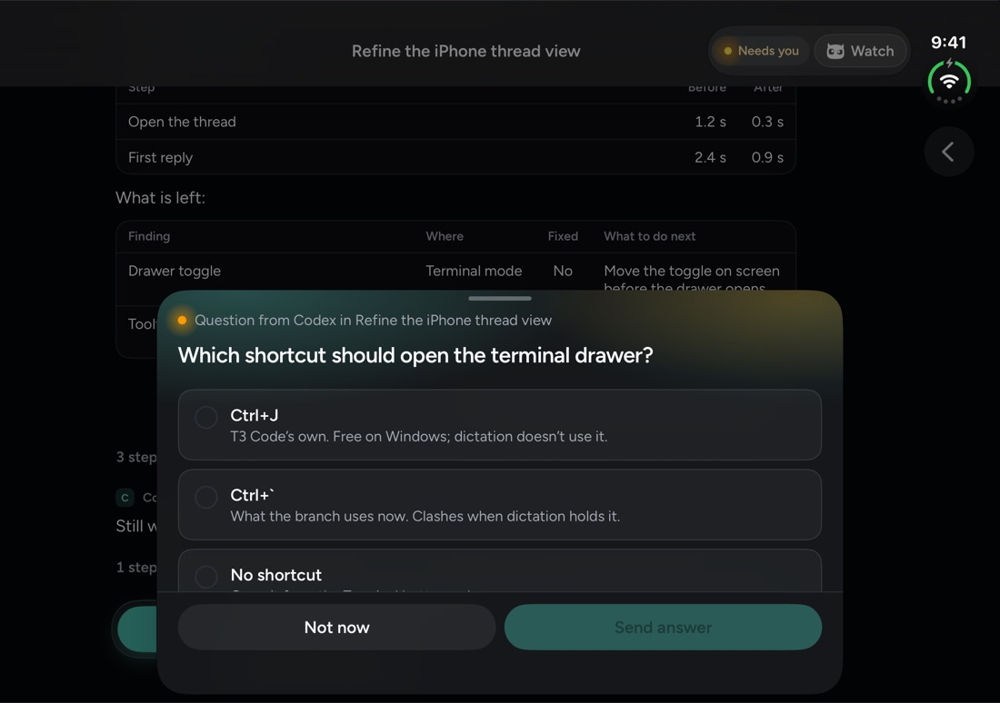
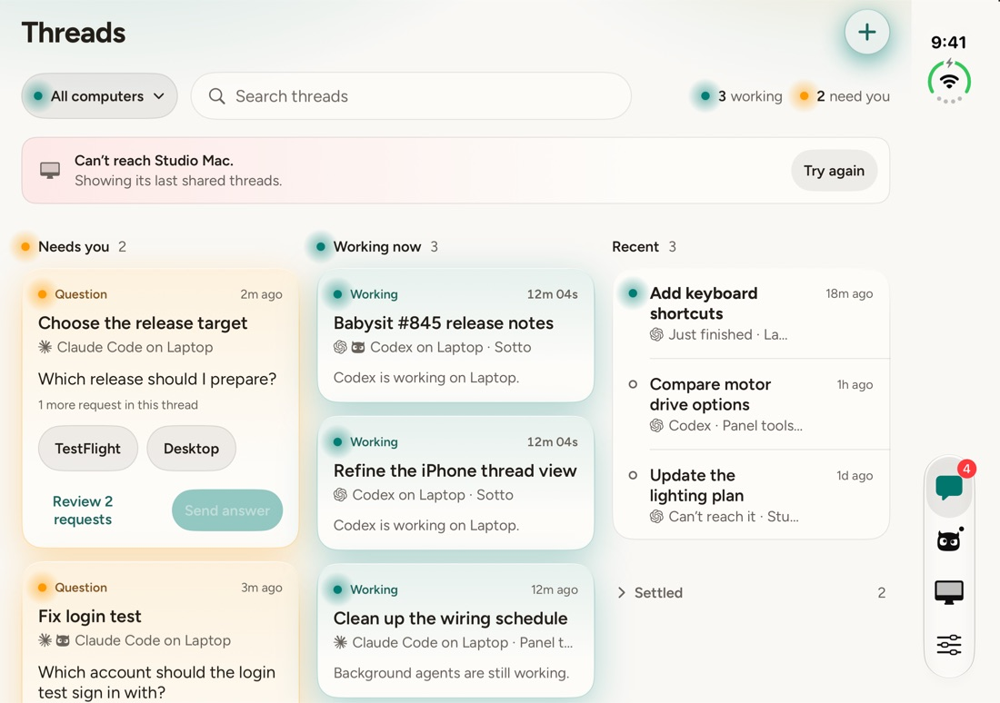
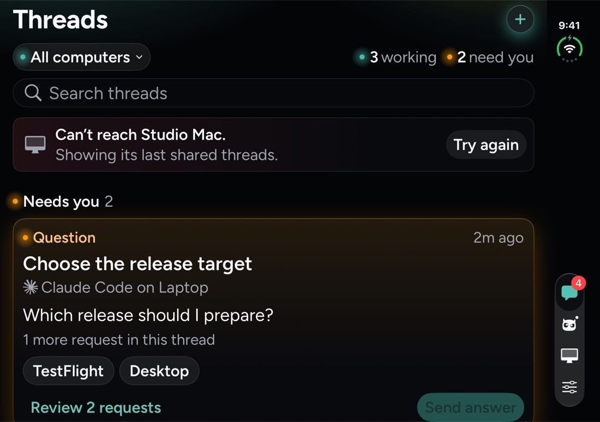
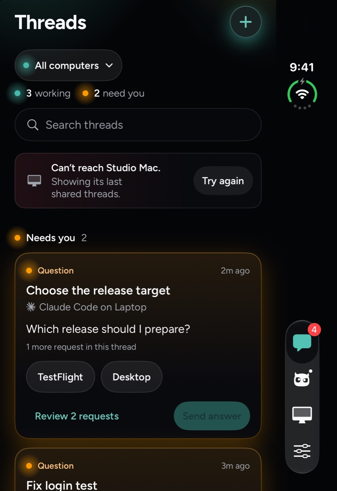
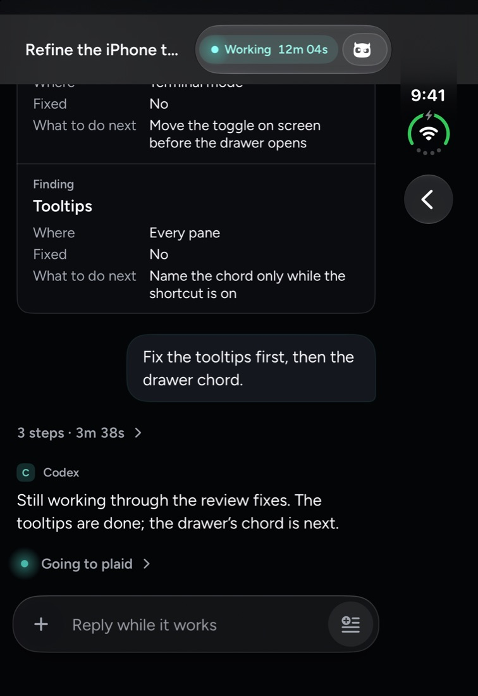
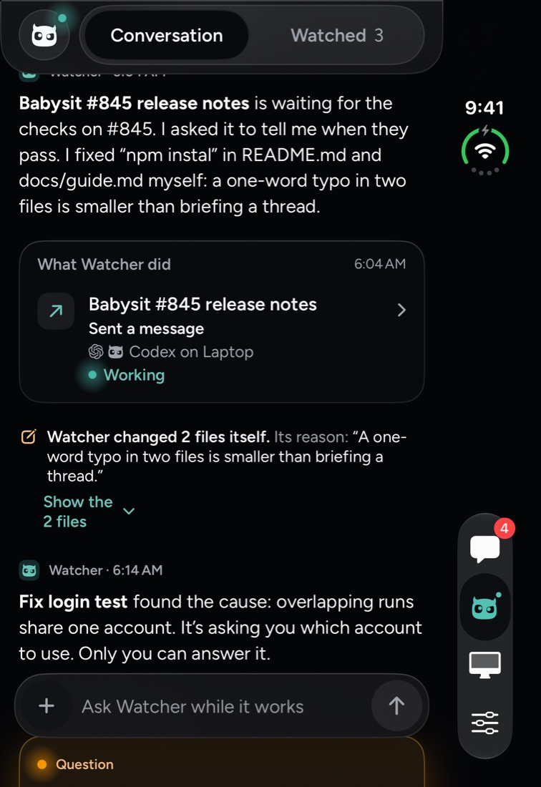
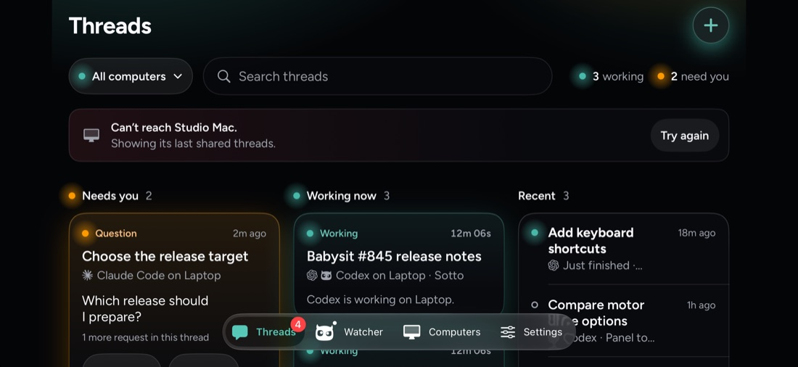

Layout 7 of the eight mock-ups (tag prototype/iphone-duo-layout), built on feat/iphone-duo-columns and captured on the iPhone Duo simulator.









Also regular width, so it gets the columns. The page scrolls as one.
